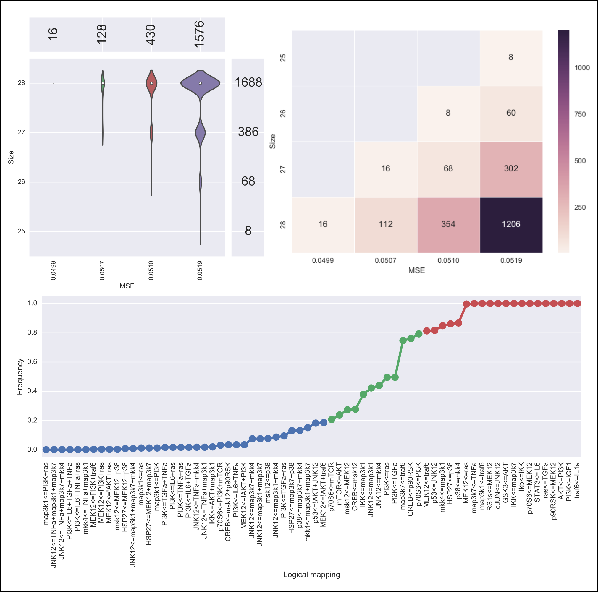
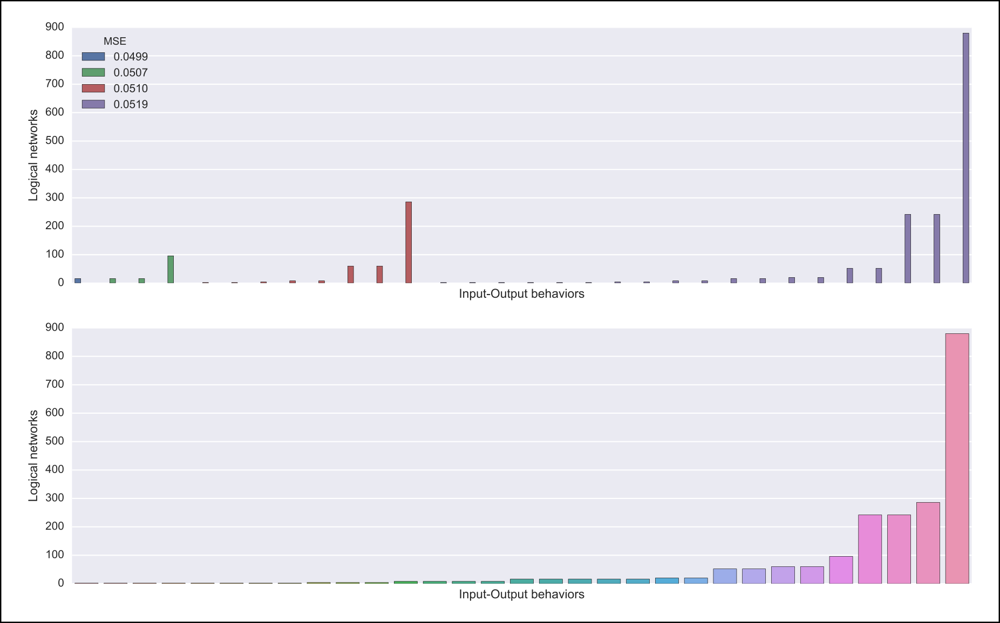
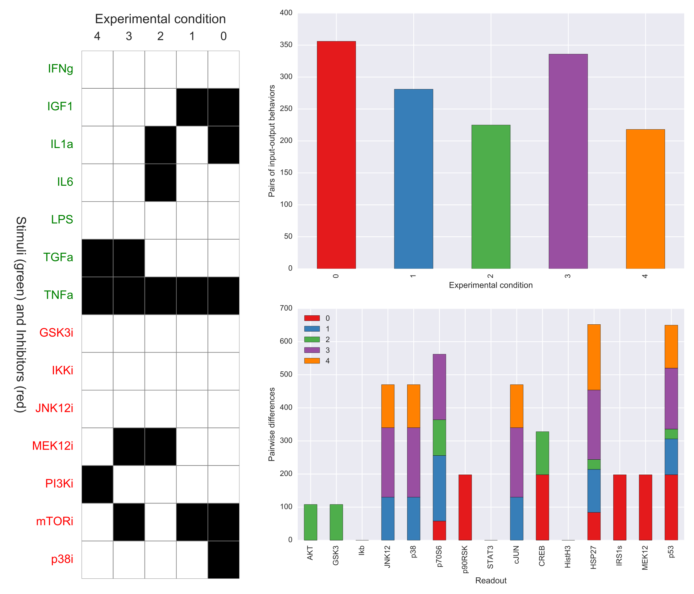
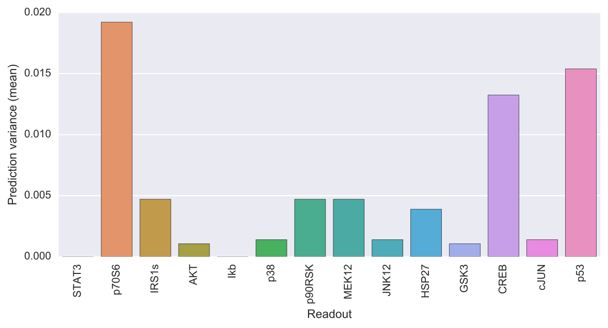
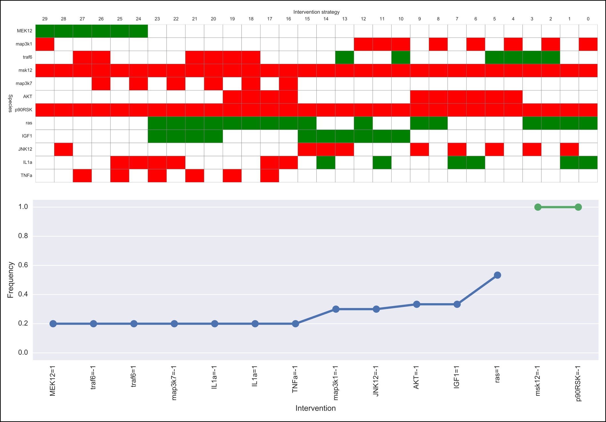

Usage¶
Input/Output files¶
Input and output files in caspo are mostly comma separated values (csv) files. Next, we describe all files either consumed or produced when running caspo subcommands.
Prior knowledge network¶
A prior knowledge network (PKN) is given using the simple interaction format (SIF). Lines in the SIF file must specify a source node, an edge sign (1 or -1), and one target node.
| a | 1 | d |
| b | 1 | d |
| c | -1 | d |
| b | 1 | e |
| c | 1 | e |
Experimental setup¶
An experimental setup is given using the JSON format. The JSON file must specify three list of node names, namely, stimuli, inhibitors, and readouts.
{
"stimuli": ["a", "b", "c"],
"inhibitors": ["d"],
"readouts": ["f", "g"]
}
Experimental dataset¶
A phosphoproteomics dataset is given using the MIDAS format.
| TR:Toy:CellLine | TR:a | TR:b | TR:c | TR:di | DA:f | DA:g | DV:f | DV:g |
|---|---|---|---|---|---|---|---|---|
| 1 | 1 | 0 | 1 | 0 | 0 | 0 | 0 | 0 |
| 1 | 1 | 0 | 1 | 1 | 0 | 0 | 0 | 0 |
| 1 | 1 | 0 | 1 | 0 | 10 | 10 | 0.9 | 0 |
| 1 | 1 | 0 | 1 | 1 | 10 | 10 | 0.1 | 0.9 |
Logical networks¶
Logical networks are given using a csv file as follows. The columns header specify possible logical mappings or functions, e.g. d<=a+!c (d equals a AND NOT c). Then, each row describes a logical network by specifying which logical mappings are present (1) in the network or not (0). Additional columns could be included to give more details related to each network, e.g., MSE, size, or the number of networks having the same input-output behavior. See the output csv files in subcommands Learn (networks.csv) or Classify (behaviors.csv). When parsing a csv file of logical networks, caspo ignores columns that cannot be parsed as logical mappings except for a column named networks which is interpreted as the number of networks exhibiting the same input-output behavior.
| e<=c | e<=b | d<=a | d<=!c | d<=b | d<=a+!c | d<=b+!c | f<=d+e |
|---|---|---|---|---|---|---|---|
| 1 | 1 | 1 | 0 | 0 | 0 | 1 | 0 |
| 1 | 1 | 1 | 1 | 0 | 0 | 0 | 0 |
| 1 | 1 | 1 | 0 | 1 | 0 | 1 | 0 |
| 1 | 1 | 1 | 1 | 1 | 0 | 0 | 0 |
| 1 | 1 | 1 | 0 | 0 | 0 | 1 | 0 |
Basic statistics over all logical networks are described using a csv file as follows.
| mapping | frequency | exclusive | inclusive |
|---|---|---|---|
| e<=c | 1.0000 | ||
| e<=b | 1.0000 | ||
| d<=a | 1.0000 | ||
| d<=b+!c | 0.6000 | d<=!c | |
| d<=!c | 0.4000 | d<=b+!c | |
| d<=b | 0.4000 |
Logical predictions¶
| a | c | b | di | AVG:g | AVG:f | VAR:g | VAR:f |
|---|---|---|---|---|---|---|---|
| 1 | 0 | 0 | 0 | 0.0 | 0.0 | 0.0 | 0.0 |
| 0 | 1 | 0 | 0 | 0.0 | 0.0 | 0.0 | 0.0 |
| 0 | 0 | 1 | 0 | 1.0 | 0.8 | 0.0 | 0.16 |
| 0 | 1 | 1 | 0 | 0.0 | 0.4 | 0.0 | 0.24 |
Intervention scenarios¶
| SC:a | SG:f | SG:g |
|---|---|---|
| 1 | -1 | -1 |
Command Line Interface¶
Start by asking caspo for help:
$ caspo --help
usage: caspo [-h] [--quiet] [--out O] [--version]
{learn,classify,predict,design,control,visualize,test} ...
Reasoning on the response of logical signaling networks with ASP
optional arguments:
-h, --help show this help message and exit
--quiet do not print anything to standard output
--out O output directory path (Default to './out')
--version show program's version number and exit
caspo subcommands:
for specific help on each subcommand use: caspo {cmd} --help
{learn,classify,predict,design,control,visualize,test}
Learn¶
Help on caspo learn:
$ caspo learn --help
usage: caspo learn [-h] [--threads T] [--conf C] [--fit F] [--size S]
[--factor D] [--discretization T] [--length L]
pkn midas time
positional arguments:
pkn prior knowledge network in SIF format
midas experimental dataset in MIDAS file
time time-point to be used in MIDAS
optional arguments:
-h, --help show this help message and exit
--threads T run parallel search with given number of threads
--conf C threads configurations (Default to many)
--fit F tolerance over fitness (Default to 0)
--size S tolerance over size (Default to 0)
--factor D discretization over [0,D] (Default to 100)
--discretization T discretization function: round, floor, ceil (Default to
round)
--length L max length for conjunctions (hyperedges) (Default to 0;
unbounded)
Run caspo learn:
$ caspo learn pkn.sif dataset.csv 30 --fit 0.04
Running caspo learn...
Optimum logical network learned in 1.0537s
Optimum logical networks has MSE 0.0499 and size 28
2150 (nearly) optimal logical networks learned in 2.6850s
Weighted MSE: 0.0513
The output of caspo learn will be two csv files, namely, networks.csv and stats-networks.csv. The file networks.csv describes all logical networks found with their corresponding MSE and size. The file stats-networks.csv describes the frequency of each logical mapping over all networks together with pairs of mutually inclusive/exclusive mappings. The weighted MSE combining all networks is also computed and printed in the standard output. In addition, the following default visualizations are provided describing the family of logical networks:
{kind=link}
Classify¶
Help on caspo classify:
$ caspo classify --help
usage: caspo classify [-h] [--threads T] [--conf C] [--midas M T]
networks setup
positional arguments:
networks logical networks in CSV format
setup experimental setup in JSON format
optional arguments:
-h, --help show this help message and exit
--threads T run parallel search with given number of threads
--conf C threads configurations (Default to many)
--midas M T experimental dataset in MIDAS file and time-point to be used
Run caspo classify:
$ caspo classify networks.csv setup.json --midas dataset.csv 30
Running caspo classify...
Classifying 2150 logical networks...
Input-Output logical behaviors: 31
Weighted MSE: 0.0513
The output of caspo classify will be a csv file named behaviors.csv describing one representative logical network for each input-output behavior found among given networks. For each representative network, the number of networks having the same behavior is also given. Further, if a dataset is given, the weighted MSE is computed. Also, one of the following visualizations is provided depending on whether the dataset was given as an argument or not.
{kind=link}
Design¶
Help on caspo design:
$ caspo design --help
usage: caspo design [-h] [--threads T] [--conf C] [--stimuli S]
[--inhibitors I] [--nexp E] [--list L] [--relax]
networks setup
positional arguments:
networks logical networks in CSV format
setup experimental setup in JSON format
optional arguments:
-h, --help show this help message and exit
--threads T run parallel search with given number of threads
--conf C threads configurations (Default to many)
--stimuli S maximum number of stimuli per experiment
--inhibitors I maximum number of inhibitors per experiment
--nexp E maximum number of experiments (Default to 10)
--list L list of possible experiments
--relax relax full pairwise discrimination (Default to False)
Run caspo design:
$ caspo design behaviors.csv setup.json
Running caspo design...
1 optimal experimental designs found in 219.5648s
The output of caspo design will be two csv files, namely, designs.csv and stats-designs.csv. The file designs.csv describes all optimal experimental designs. The file stats-designs.csv describes for each experimental designs the number of pairwise differences per experimental condition and readout. Also, the number of pairs of input-output behaviors discriminated by experimental condition is given. In addition, the following visualizations are provided for each experimental design:
{kind=link}
Predict¶
Help on caspo predict:
$ caspo predict --help
usage: caspo predict [-h] networks setup
positional arguments:
networks logical networks in CSV format.
setup experimental setup in JSON format
optional arguments:
-h, --help show this help message and exit
Run caspo predict:
$ caspo predict behaviors.csv setup.json
Running caspo predict...
Computing all predictions and their variance for 31 logical networks...
The output of caspo predict will be a csv file named predictions.csv describing for each possible experimental perturbation, the corresponding weighted average prediction and its variance for each readout. Also, the following visualization is provided:
{kind=link}
Control¶
Help on caspo control:
$ caspo control -h
usage: caspo control [-h] [--threads T] [--conf C] [--size M]
[--allow-constraints] [--allow-goals]
networks scenarios
positional arguments:
networks logical networks in CSV format
scenarios intervention scenarios in CSV format
optional arguments:
-h, --help show this help message and exit
--threads T run parallel search with given number of threads
--conf C threads configurations (Default to many)
--size M maximum size for interventions strategies (Default to 0
(no limit))
--allow-constraints allow intervention over side constraints (Default to
False)
--allow-goals allow intervention over goals (Default to False)
Run caspo control:
$ caspo control networks.csv scenarios.csv
Running caspo control...
30 optimal intervention strategies found in 9.2413s
The output of caspo control will be two csv files, namely, strategies.csv and stats-strategies.csv. The file strategies.csv describes all intervention strategies found. The file stats-strategies.csv describes the frequency of each intervention over all strategies together with pairs of mutually inclusive/exclusive interventions. In addition, the following default visualizations are provided describing all intervention strategies:
{kind=link}
Visualize¶
Run caspo visualize:
$ caspo visualize --pkn out/pkn.sif --networks out/networks.csv --setup out/setup.json